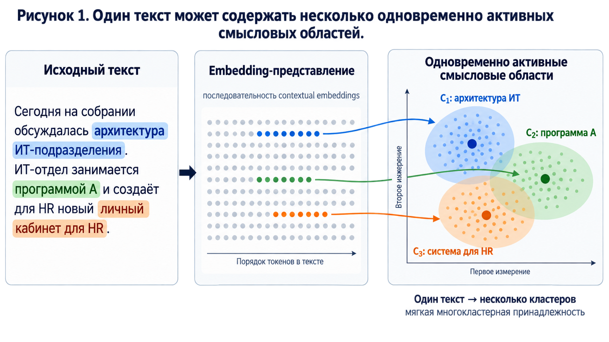
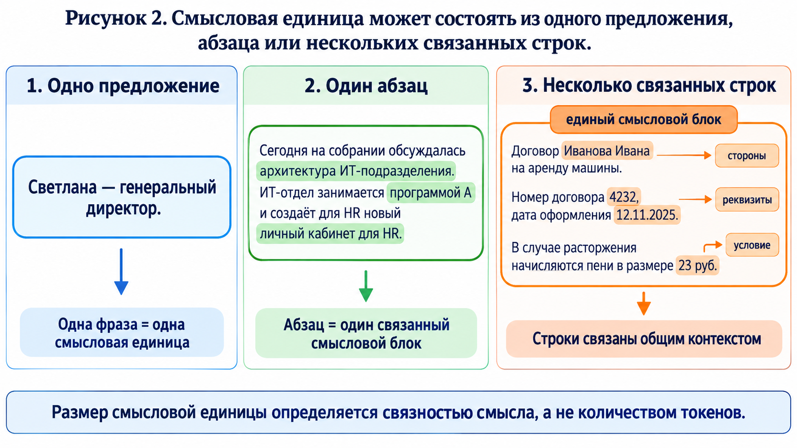
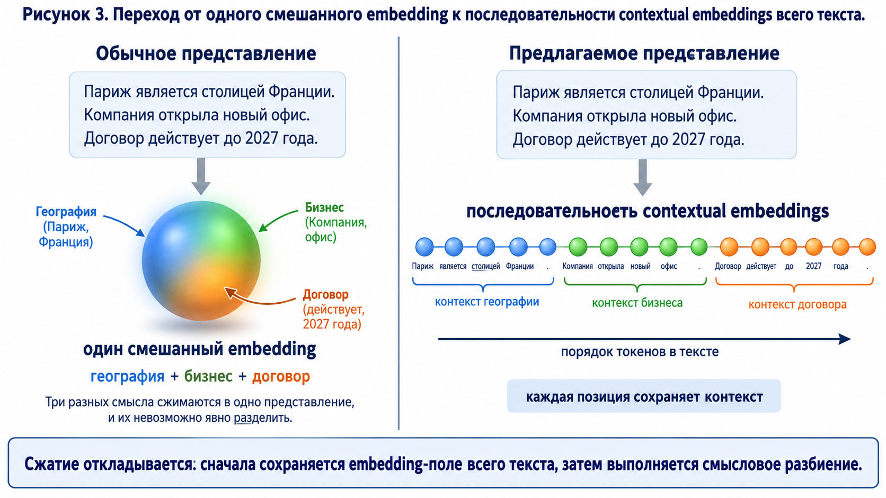
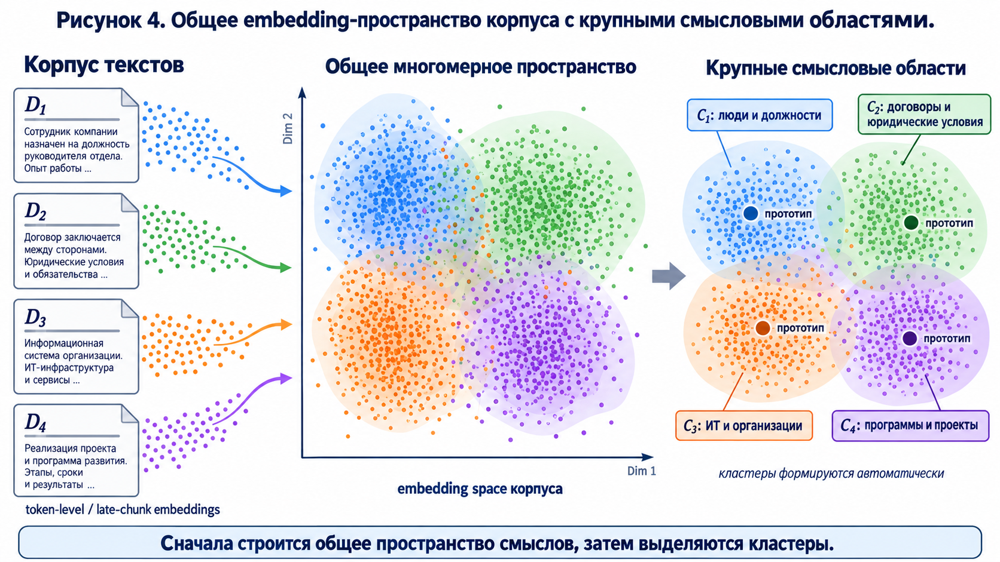
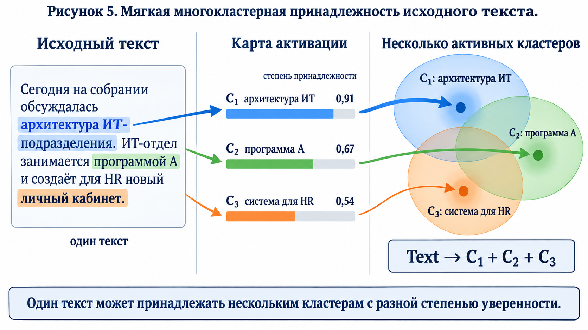
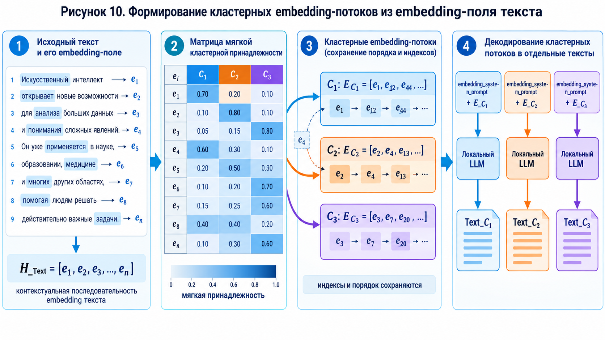
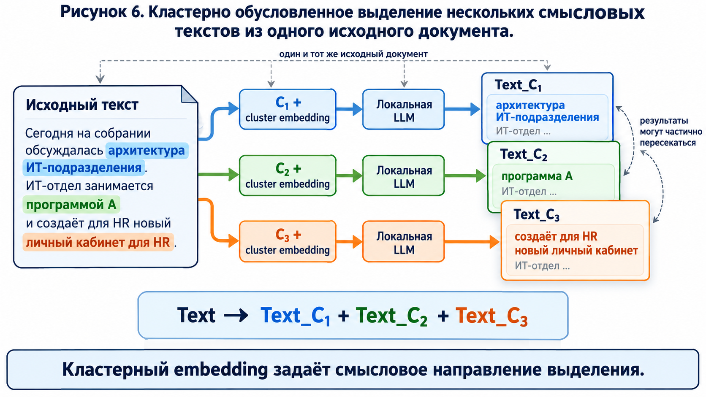
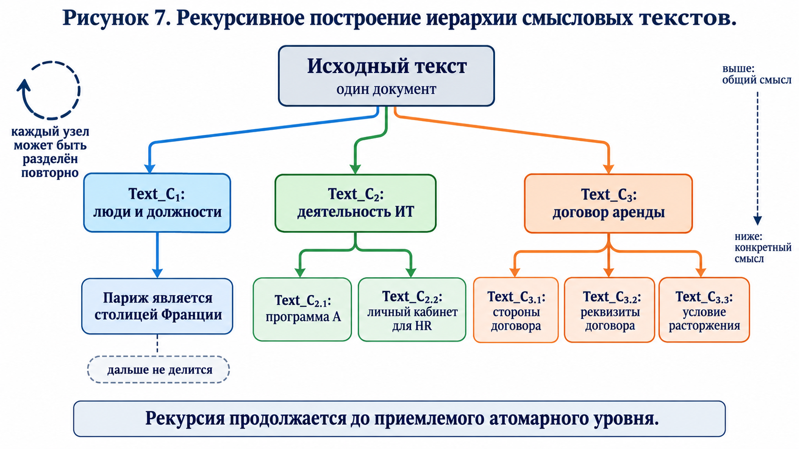
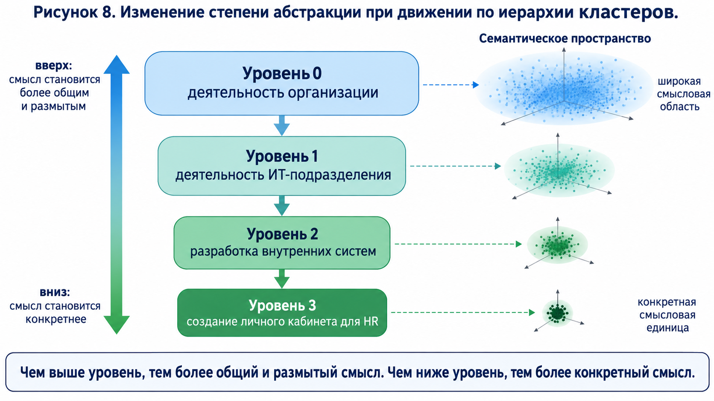
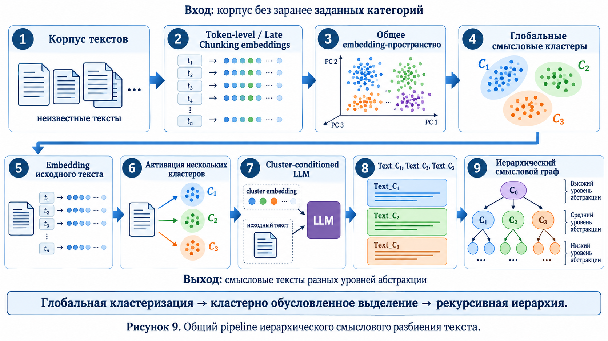

Иерархическое смысловое разбиение текста через кластеризацию embedding-пространства
Метод построения смысловых текстов и иерархического смыслового графа без заранее заданных категорий.
Один документ может содержать несколько смыслов, а один смысл может быть распределён по предложению, абзацу или нескольким связанным строкам. Поэтому текст целесообразно представлять не одним embedding, а иерархией смысловых областей разного масштаба.
1. Решаемая проблема
1.1. Один текст может содержать несколько смыслов
Обычная схема часто неявно предполагает, что документ относится к одной теме или одному кластеру. В реальности это не так. Один абзац может одновременно описывать архитектуру ИТ-подразделения, программу, работу отдела и систему для HR.
Если весь абзац сжать в один вектор, эти смыслы смешиваются. Если разделить текст только по предложениям, можно потерять связь между предложениями, которые вместе образуют одно утверждение.
Пример смешанного смысла
В тексте «ИТ-отдел занимается программой А и создаёт для HR новый личный кабинет» одновременно присутствуют ИТ-подразделение, программа и HR-система. Один pooled embedding будет представлять их как одну смешанную точку. Предлагаемый метод сохраняет возможность активировать несколько смысловых областей.
От близости признаков к целостному смыслу
В embedding-пространстве слово «король» может быть близко к областям «мужчина», «власть», «монархия» и «правитель». Это отражает несколько близких признаковых направлений, но ещё не является полноценным смыслом высказывания. В предложении «Король подписал указ» важна уже связка «субъект → действие → объект», которую нужно сохранять в контекстной последовательности, а не раскладывать на независимые слова.

1.2. Смысловая единица имеет переменный размер
Смысловая единица не обязана совпадать с предложением. Иногда достаточно одной фразы, иногда смысл сохраняется только в целом абзаце, а иногда несколько строк должны храниться вместе.
Почему фиксированный размер не подходит
«Светлана — генеральный директор» можно оставить одним предложением. В абзаце про ИТ-подразделение целостный смысл может занимать весь абзац. В договоре строка «Номер договора 4232» требует контекста заголовка и должна быть связана с ним.

1.3. Один embedding документа недостаточен
Проблема заключается не в самом embedding, а в слишком раннем сжатии информации. При представлении всего документа одним вектором становится трудно определить, какие части текста относятся к конкретной смысловой области.
Вместо этого сохраняется последовательность contextual embeddings:
Каждый вектор соответствует токену, позиции или поздно агрегируемому участку текста.
Два разных уровня представления
Pooled embedding:
весь документ → один вектор
Embedding-поле:
весь документ → [h₁, h₂, h₃, …, hₙ]
↑ ↑ ↑
позиции исходного текстаВторая схема сохраняет материал, из которого позднее можно выделить разные смысловые области.

2. Существующие методы решения
Предлагаемый метод опирается на несколько уже известных направлений, но объединяет их в одну процедуру.
- Semantic embeddings. Sentence-BERT, SimCSE и другие модели кодируют смысл предложения или документа.
- Semantic и topic segmentation. TextTiling ищет границы по ослаблению лексической связности между соседними участками текста.
- Late Chunking. Late Chunking сначала кодирует весь текст, а затем из последовательности contextual embeddings выделяет фрагменты.
- Multi-vector representation. ColBERT сохраняет матрицу token-level embeddings вместо одного вектора документа.
- Deep Embedded Clustering. DEC совместно обучает пространство представлений и кластерные назначения.
- Иерархическая кластеризация. HERCULES и Semantic Tree Inference строят уровни кластеров от конкретных областей к более общим.
Эти методы решают отдельные части задачи. Полная схема, в которой глобальный embedding-кластер используется для выделения из исходного текста отдельного смыслового текста, а затем рекурсивно разделяется на подкластеры, требует специальной реализации.
Важно различать два представления. Pooled embedding — один вектор всего текста. Embedding-поле — последовательность контекстных векторов всех токенов или позиций. Предлагаемый метод использует второе представление: кластеризация выполняется в общем пространстве embedding-поля корпуса, а не только среди готовых векторов документов.
Поэтому смысловые единицы не задаются заранее только предложениями, абзацами или окнами фиксированного размера. Такие границы могут использоваться как техническое ограничение для длинного текста, но сами смысловые группы определяются после построения общего многомерного пространства корпуса.
| Метод | Что он решает | Чего не хватает для предлагаемой задачи |
|---|---|---|
| TextTiling / topic segmentation | Ищет границы между связными темами. | Не строит кластерно обусловленные смысловые тексты и их рекурсивную иерархию. |
| Late Chunking / ColBERT | Сохраняет контекстные token-level или multi-vector представления. | Не создаёт автоматически дерево смысловых кластеров. |
| DEC / BERTopic | Группирует embedding в кластеры или темы. | Обычно кластеризует готовые объекты, но не выделяет из каждого документа отдельный текст для каждого активного кластера. |
| HERCULES / Semantic Tree Inference | Строит иерархические кластеры и описания. | Не реализует полностью проекцию одного исходного текста на несколько кластерно обусловленных текстов. |
3. Основная идея предлагаемого метода
Сначала для всего корпуса строится общее многомерное embedding-пространство. Затем в нём автоматически формируются крупные смысловые области.

Кластер на верхнем уровне может быть широким и размытым. Он не обязан сразу соответствовать атомарному понятию. Его задача — объединить близкие смысловые области и задать направление дальнейшего выделения.
Сначала кластеризуется корпус, а не новый документ
Пусть корпус содержит документы о должностях, договорах, ИТ-проектах и программах. После кластеризации могут появиться крупные области:
C₁ — люди и должности C₂ — договоры и юридические условия C₃ — ИТ и организации C₄ — программы и проекты
Новый текст не создаёт эти категории заново. Он проверяется относительно уже построенного общего пространства и может активировать сразу несколько областей.
4. Алгоритм предлагаемого метода
Шаг 1. Получение embedding-поля текста
Каждый документ пропускается через embedding-модель, которая возвращает последовательность контекстных представлений токенов или позиций:
Здесь сохраняются не только значения векторов, но и их позиции в исходном тексте. При использовании Late Chunking весь текст сначала обрабатывается в полном контексте, а разбиение и pooling выполняются позднее. Если отбор должен быть ориентирован на конкретную задачу, инструкция вроде «оставь только детали, связанные с выбранной смысловой областью» также может быть закодирована embedding-моделью как системный embedding-запрос.
Пример
Для текста «Номер договора 4232, дата оформления 12.11.2025» embedding числа 4232 может учитывать, что рядом находятся слова «номер договора», а embedding даты — что она является реквизитом того же документа. Это contextual embeddings, а не независимые векторы слов.
Шаг 2. Построение общего кластерного пространства
Embedding-последовательности всего корпуса объединяются и кластеризуются:
Каждый кластер хранит прототип или более сложное описание области: плотность, радиус, разброс и дочерние подкластеры.
Пример глобальных прототипов
C₁ = prototype(люди, должности, организации) C₂ = prototype(договоры, реквизиты, условия) C₃ = prototype(ИТ, отделы, системы) C₄ = prototype(программы, проекты, задачи)
Шаг 3. Мягкая принадлежность исходного текста
Для каждой позиции исходного текста оценивается близость к прототипам кластеров. Один текст может одновременно активировать несколько кластеров:
Принадлежность является мягкой: разные кластеры активируются с разной силой. Не требуется принудительно выбирать только один класс. Один и тот же вектор eᵢ может иметь ненулевые веса сразу в нескольких кластерах.
| Фрагмент | C₁: люди | C₂: договоры | C₃: ИТ | C₄: программы |
|---|---|---|---|---|
| архитектура ИТ-подразделения | 0,08 | 0,01 | 0,91 | 0,15 |
| программа А | 0,03 | 0,02 | 0,68 | 0,89 |
| личный кабинет для HR | 0,25 | 0,01 | 0,87 | 0,34 |
В этом примере текст активирует как минимум кластер ИТ и кластер программ, а отдельные фрагменты имеют разные профили принадлежности.

Шаг 4. Формирование кластерных embedding-потоков
После расчёта принадлежности исходная последовательность не заменяется одной меткой. Из неё собираются отдельные группы embedding, соответствующие активным кластерам. Один и тот же исходный вектор может попасть в несколько групп с разными весами. Например:
C₁: EC₁ = [e₁, e₁₂, e₄₄, …]
C₂: EC₂ = [e₂, e₄, e₁₃, …]
Каждая группа должна хранить исходные индексы, порядок позиций и веса принадлежности. Практически это может быть представлено как:
E_Cj = {
embeddings: [e_i1, e_i2, e_i3, ...],
positions: [i1, i2, i3, ...],
weights: [w_i1, w_i2, w_i3, ...]
}Если требуется сохранить исходную длину последовательности, вместо физического удаления позиций используется кластерная маска:
Так сохраняется связь между выбранными embedding и исходным текстом. Соседние позиции могут быть добавлены с меньшим весом, если без них теряется грамматическая или логическая связность.

Шаг 5. Кластерно обусловленное выделение текста
Для каждого активного кластера формируется специальный embedding-запрос. В локальной языковой модели он может быть передан как дополнительный soft token или последовательность soft tokens:
[embedding_system_prompt] + [E_Cj или H_Text с маской M_Cj] → вход локальной LLM
Модель получает задачу выделить из исходного документа смысл, связанный с выбранным кластером. Получаются отдельные смысловые тексты:
Пошаговый пример
Исходный текст: «Сегодня на собрании обсуждалась архитектура ИТ-подразделения. ИТ-отдел занимается программой А и создаёт для HR новый личный кабинет.»
Кластер C₃: embedding области «ИТ и организации».
Результат: Text_C₃ = «ИТ-отдел занимается программой А и создаёт для HR новый личный кабинет.»
Кластер C₄: embedding области «программы и проекты».
Результат: Text_C₄ = «обсуждалась программа А, которую реализует ИТ-отдел.»
Второй результат может содержать контекст «ИТ-отдел», хотя основной кластер связан с программой. Это допустимое пересечение.

Выделенные тексты могут частично пересекаться. LLM может сохранить детали соседнего кластера, если они нужны для связности. Для метода допустимы частичные потери исходной информации: цель состоит в смысловом разделении, а не в точной реконструкции документа.
Для облачной LLM такой кластерный embedding нельзя передать напрямую через обычный текстовый prompt. Тогда необходимы текстовое описание кластера или обученный projection/cross-attention слой. Локальная модель может принимать кластерный embedding непосредственно в embedding-последовательности, если её архитектура поддерживает такой ввод.
Два варианта передачи кластерного смысла
Локальная LLM: [cluster embedding] → soft token → вход модели Облачная LLM: [cluster embedding] → текстовое описание кластера или → специальный адаптер/projection слой
Шаг 6. Рекурсивное разбиение кластерной области
Каждый полученный смысловой текст становится узлом следующего уровня. Сначала родительская область Cj в общем корпусном пространстве делится на подкластеры Cj.1, Cj.2, … . Затем Text_Cj повторно проецируется на эти дочерние области, после чего процедура выделения повторяется:
Пример рекурсивного разбиения договора
После первого уровня появляется:
Text_C₃: договор аренды автомобиля Иванова Ивана. Номер договора 4232, дата оформления 12.11.2025. В случае расторжения начисляются пени в размере 23 руб.
На следующем уровне этот текст может быть разделён на:
Text_C₃.₁: стороны договора — Иванов Иван Text_C₃.₂: реквизиты — номер 4232, дата 12.11.2025 Text_C₃.₃: условие — пеня 23 руб. при расторжении

В локальной модели цепочка может проходить непосредственно через токенизатор и embedding-слой: к embedding-последовательности добавляются собственные cluster embeddings или soft tokens. В облачной модели передать произвольный вектор через обычный текстовый prompt нельзя. Поэтому используются текстовое описание кластера либо специально обученный projection/cross-attention слой.
Процедура рекурсивного уточнения
1. C₃ → C₃.₁, C₃.₂, C₃.₃ 2. Text_C₃ → E_C₃.₁, E_C₃.₂, E_C₃.₃ 3. embedding_system_prompt + E_C₃.₁ → Text_C₃.₁ 4. embedding_system_prompt + E_C₃.₂ → Text_C₃.₂
Следующий уровень строится относительно подкластеров родительской области, а не как независимая классификация всего корпуса заново.
Рекурсия останавливается, если смысловой текст уже достаточно компактен, дальнейшее разделение разрушает его целостность или достигнут минимальный допустимый размер, например одно предложение. Поэтому фраза «Париж является столицей Франции» может остаться одной неделимой смысловой единицей.
Критерий остановки
«Париж является столицей Франции»
↓
одна цельная смысловая единица
↓
дальше не делитсяРазделение на «Париж», «столица» и «Франция» разрушило бы утверждение, которое представляет собой отношение между всеми компонентами.
5. Иерархия смысловых текстов
Получаемая структура имеет разные степени абстракции. Верхние уровни объединяют широкие смысловые области, а нижние содержат более конкретные смысловые единицы.
Уровень 0: деятельность организации
↓
Уровень 1: деятельность ИТ-подразделения
↓
Уровень 2: разработка внутренних систем
↓
Уровень 3: создание личного кабинета для HR

Формально результат является не только деревом, поскольку один исходный текст может породить несколько ветвей и принадлежать нескольким кластерам. Поэтому итоговую структуру можно рассматривать как иерархический смысловой граф.
Пример итоговой иерархии
договор аренды автомобиля
├── стороны договора
│ └── Иванов Иван
├── реквизиты договора
│ ├── номер 4232
│ └── дата 12.11.2025
└── условия расторжения
└── пеня 23 руб.Один и тот же узел может быть связан с несколькими глобальными областями: «договоры», «люди», «реквизиты» и «финансовые условия».
6. Преимущества метода
Предлагаемый подход не является обычным RAG. В RAG сначала ищутся готовые документы или chunks, которые затем передаются языковой модели. Здесь сначала создаётся новая иерархическая структура смысловых текстов, а обращение к ней является отдельной последующей задачей.
Разница с RAG
Обычный RAG:
запрос → поиск похожих chunks → контекст LLM
Предлагаемый метод:
текст → embedding-поле → кластеры
→ Text_C₁, Text_C₂, …
→ рекурсивная иерархия смыслов- Переменный размер смысловой единицы. Не требуется заранее выбирать фиксированное количество токенов.
- Многокластерная принадлежность. Один текст может одновременно относиться к нескольким смысловым областям.
- Сохранение контекста. Late Chunking учитывает полный контекст документа при формировании представления фрагмента.
- Иерархическая детализация. Один и тот же текст доступен на общем, среднем и конкретном уровнях абстракции.
- Открытие новых смыслов. Кластеры могут формироваться без заранее заданной онтологии или списка категорий.
- Совместимость с локальными LLM. Cluster embeddings могут подаваться в модель как дополнительные soft tokens.
- Совместимость с распределённой памятью. Крупные смысловые тексты могут быть узлами, а более конкретные — внутренними NodeChunk.
Граница между предлагаемым методом и текущей памятью
Описанный метод отвечает на вопрос: как превратить текст в иерархию смысловых текстов? Правила маршрутизации, выбор активных узлов и обновление распределённой памяти относятся к следующему этапу. В базовой версии памяти разбиение может оставаться простым — предложения, абзацы или token windows для слишком длинных фрагментов, — а embedding-кластеризация добавляется как отдельный слой.
7. Заключение
Предлагаемый метод объединяет token-level embeddings, Late Chunking, глобальную кластеризацию и локальную языковую модель в единую процедуру смыслового разбиения.
В результате исходный текст представляется не одним embedding и не одной меткой, а набором смысловых текстов разного масштаба. Верхние уровни описывают общие размытые области, нижние — конкретные смысловые единицы.
При этом задача статьи заканчивается построением смысловой иерархии. Правила маршрутизации, поиск по графу, выбор активных узлов и обновление распределённой памяти являются следующими этапами и могут исследоваться отдельно.
